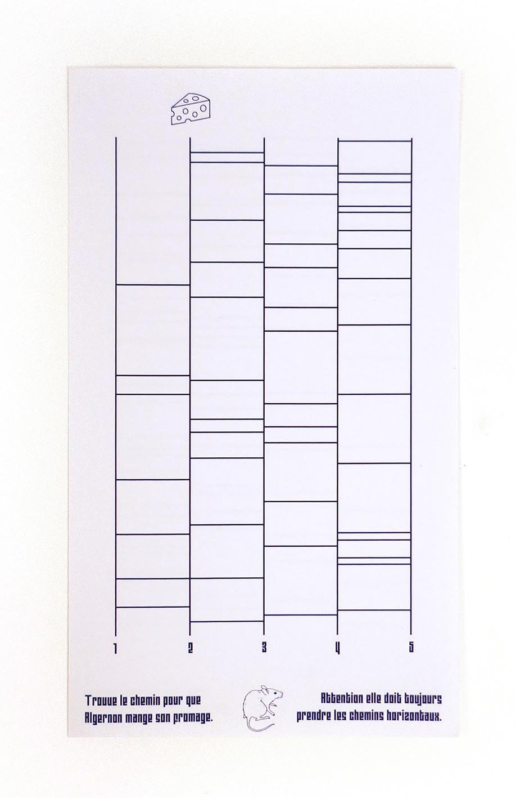
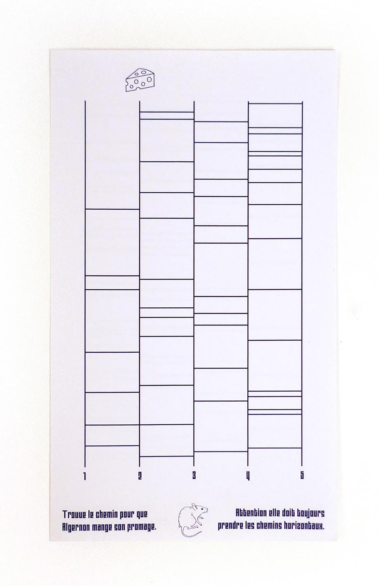

Labyrinthe
Couverture fictive du livre Des fleurs pour Algernon de Daniel Keyes. Elle fait écho aux labyrinthes des souris de laboratoires utilisés pour vérifier l'intelligence de ces dernières. La typographie utilisée -Mourier de Eric Mourier- rappelle également ces derniers. Les inserts permettent de vérifier les connaissances dula lecteur•ice.


 
